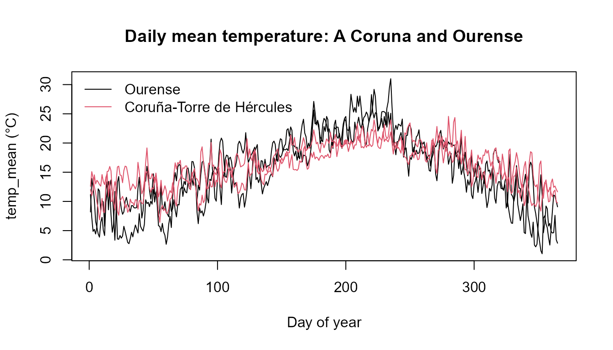

Functional data analysis with MeteoGalicia
Source:vignettes/functional-data.Rmd
functional-data.Rmd
library(meteogal2fdata)
library(fda.usc)
#> Loading required package: fda
#> Loading required package: splines
#> Loading required package: fds
#> Loading required package: rainbow
#> Loading required package: MASS
#> Warning: package 'MASS' was built under R version 4.6.1
#> Loading required package: pcaPP
#> Loading required package: RCurl
#> Warning: package 'RCurl' was built under R version 4.6.1
#> Loading required package: deSolve
#>
#> Attaching package: 'fda'
#> The following object is masked from 'package:graphics':
#>
#> matplot
#> The following object is masked from 'package:datasets':
#>
#> gait
#> Loading required package: mgcv
#> Loading required package: nlme
#> Warning: package 'nlme' was built under R version 4.6.1
#> This is mgcv 1.9-4. For overview type '?mgcv'.
#> Loading required package: knitr
#> Warning: package 'knitr' was built under R version 4.6.1
#> fda.usc is running sequentially usign foreach package
#> Please, execute ops.fda.usc() once to run in local parallel mode
#> Deprecated functions: min.basis, min.np, anova.hetero, anova.onefactor, anova.RPm
#> New functions: optim.basis, optim.np, fanova.hetero, fanova.onefactor, fanova.RPm
#> ----------------------------------------------------------------------------------One annual curve per station and year
meteogal2fdata() converts one numerical variable into an
fdata object. Each row is one station-year and the 365
columns represent calendar days on a common non-leap-year grid. February
29 is removed and subsequent days in leap years are shifted back, so day
60 is always March 1.
Days without observations and values rejected by the selected
validation criterion remain NA; the package does not impute
them.
f <- system.file("extdata", "meteogal_small.csv", package = "meteogal2fdata")
mg <- meteogal2df(data_dir = f)
fd <- meteogal2fdata(df = mg, var = "temp_mean")
dim(fd$data)
#> [1] 1 365
fd$data[1, 1:7]
#> 1 2 3 4 5 6 7
#> 12.59 15.10 14.04 12.52 11.49 9.90 NAThe bundled meteogal_small.csv contains only a few days
and is intended to show the representation and missing-day behaviour,
not a complete annual curve.
Several variables: ldata
meteogal2lfdata() constructs an
fda.usc::ldata object. Its first element,
ld$df, contains one row per station-year; each remaining
element is an aligned fdata object for one variable.
ld <- meteogal2lfdata(df = mg, vars = c("temp_mean", "prec"))
names(ld)
#> [1] "df" "temp_mean" "prec"
names(ld$df)
#> [1] "station_id" "station_name" "municipality"
#> [4] "province" "altitude" "lon"
#> [7] "lat" "year" "n_days"
#> [10] "first_date" "last_date" "fecha"
#> [13] "n_temp_mean_valid" "n_temp_mean_interp" "n_temp_mean_masked"
#> [16] "n_temp_mean_missing" "qc_temp_mean" "n_prec_valid"
#> [19] "n_prec_interp" "n_prec_masked" "n_prec_missing"
#> [22] "qc_prec"
identical(rownames(ld$df), rownames(ld$temp_mean$data))
#> [1] TRUEMetadata and quality information
Important columns of ld$df are:
| column | meaning |
|---|---|
station_id, station_name,
municipality, province, altitude,
lon, lat
|
station metadata |
year, n_days
|
curve identifier and number of dates with any record |
first_date, last_date
|
first and last record of that station-year |
fecha |
365-column matrix with the original date represented at each grid position |
n_<v>_valid |
observations used in variable <v> after applying
quality
|
n_<v>_interp |
used observations carrying MeteoGalicia code 5 |
n_<v>_masked |
observations excluded by quality
|
n_<v>_missing |
missing points on the 365-day grid |
qc_<v> |
365-column matrix of validation codes |
The date and validation-code matrices are columns of
ld$df, which keeps them aligned when an ldata
object is subset.
ld$df[, c("fecha", "qc_temp_mean")]
#> fecha qc_temp_mean
#> 10157_2024 2024-01-01..2024-01-06 (6) NA:365
unclass(ld$df$fecha)[1, 1:8]
#> 1 2 3 4 5 6
#> "2024-01-01" "2024-01-02" "2024-01-03" "2024-01-04" "2024-01-05" "2024-01-06"
#> 7 8
#> NA NAA small artificial example illustrates the quality metadata:
toy <- data.frame(
fecha = as.Date("2024-01-01") + 0:3,
station_id = "toy",
temp_mean = c(10, 11, 30, 12),
qc_temp_mean = c(1L, 5L, 2L, 0L)
)
ld_toy <- meteogal2lfdata(df = toy, vars = "temp_mean")
#> [MeteoGalicia] quality = c(1, 5): values set to NA: 1 with code 0 (Not validated); 1 with code 2 (Suspect). Codes are kept in the qc_ columns; see meteogal_qc_codes().
ld_toy$temp_mean$data[1, 1:5]
#> 1 2 3 4 5
#> 10 11 NA NA NA
ld_toy$df[, c("n_temp_mean_valid", "n_temp_mean_interp",
"n_temp_mean_masked", "n_temp_mean_missing", "qc_temp_mean")]
#> n_temp_mean_valid n_temp_mean_interp n_temp_mean_masked
#> toy_2024 2 1 2
#> n_temp_mean_missing qc_temp_mean
#> toy_2024 363 0:1 1:1 2:1 5:1 NA:361A real coastal-inland comparison
data-raw/build-example.R creates a real 2023-2024
example using Coruña-Torre de Hércules (10157) and Ourense
(10148). These stations provide a clearer coastal-inland
comparison than two nearby stations in the same climatic area.
full <- system.file("extdata", "meteogal_example.csv", package = "meteogal2fdata")
inv_file <- system.file("extdata", "meteogal_example_inventory.rds",
package = "meteogal2fdata")
if (nzchar(full)) {
ldf <- meteogal2lfdata(
file = full,
vars = c("temp_mean", "prec"),
inventory = if (nzchar(inv_file)) inv_file else NULL
)
print(ldf$df[, c("station_id", "station_name", "year", "n_days",
"n_temp_mean_valid", "n_temp_mean_interp",
"n_temp_mean_masked")])
station_col <- as.integer(factor(ldf$df$station_id))
plot(ldf$temp_mean, col = station_col,
main = "Daily mean temperature: A Coruna and Ourense")
ii <- !duplicated(ldf$df$station_id)
legend("topleft", legend = ldf$df$station_name[ii],
col = station_col[ii], lty = 1, bty = "n")
} else {
cat("Run data-raw/build-example.R to create the real two-station example.\n")
}
#> [MeteoGalicia] quality = c(1, 5): values set to NA: 1 with code 2 (Suspect). Codes are kept in the qc_ columns; see meteogal_qc_codes().
#> station_id station_name year n_days n_temp_mean_valid
#> 10148_2023 10148 Ourense 2023 365 365
#> 10148_2024 10148 Ourense 2024 365 365
#> 10157_2023 10157 Coruña-Torre de Hércules 2023 365 365
#> 10157_2024 10157 Coruña-Torre de Hércules 2024 365 365
#> n_temp_mean_interp n_temp_mean_masked
#> 10148_2023 0 0
#> 10148_2024 0 0
#> 10157_2023 0 0
#> 10157_2024 0 0
Complete curves and fda.usc
n_days == 365 only means that a station has a record for
every calendar position. A particular variable can still be missing on
some of those days. For methods that do not accept NA,
select completeness for the variable of interest, for example:
if (nzchar(full)) {
comp <- subset(ldf, ldf$df$n_temp_mean_valid == 365)
cat(nrow(comp$df), "complete temperature curves of", nrow(ldf$df), "\n")
if (nrow(comp$df) >= 2) {
plot(func.mean(comp$temp_mean), main = "Mean curve of complete years")
}
}
#> 4 complete temperature curves of 4Whether missing values should be imputed, smoothed or otherwise modelled is a statistical decision deliberately left to the user.
Checks
stopifnot(ncol(fd$data) == 365L)
stopifnot(identical(rownames(ld$df), rownames(ld$temp_mean$data)))
stopifnot(identical(rownames(ld$df), rownames(ld$prec$data)))
stopifnot(nrow(unclass(ld$df$qc_temp_mean)) == nrow(ld$temp_mean$data))Data source: MeteoGalicia, Xunta de Galicia. Validation-code documentation: https://www.meteogalicia.gal/datosred/infoweb/meteo/docs/rss/JSON_EstacionsDiarios_es.pdf.